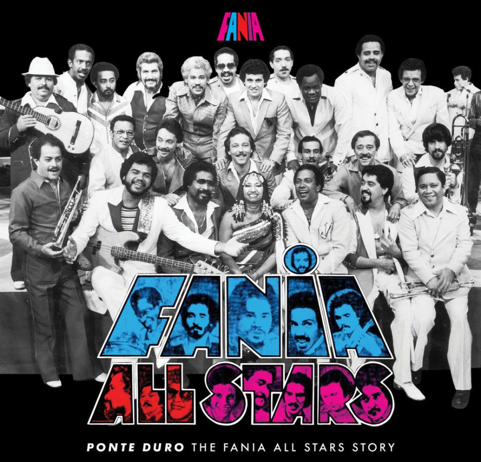

La Salsa Vive
La salsa es un género musical bailable resultante de la síntesis del son cubano y otros géneros de música caribeña y estadounidenses como el jazz y el blues. La salsa se consolidó como un éxito comercial por músicos de origen hispano (predominantemente cubanos y puertorriqueños) en Nueva York en la década de 1960, y por la labor de quien fue su principal armador, el dominicano Johnny Pacheco.

La salsa es un ritmo que mueve al mundo, una expresión cultural que define la identidad de
millones
de personas, un baile que se ha convertido en puente de comunicación entre hombres y
mujeres. En
palabras del famoso compositor cubano Eduardo Morales Caso “la salsa es un nuevo giro de los
ritmos
tradicionales al son de la música cubana, es la voz cultural de una nueva generación, es la
representación de la identidad cubana y latina en lugares como Nueva York”.
Para entender un poco más de cerca este maravilloso género, que por cierto es considerado
como
Patrimonio Cultural de la Humanidad, es importante conocer sus raíces, su historia; entender
quiénes
fueron sus primeros representantes y cuál fue el legado que le dejaron en las nuevas
generaciones.
Datos Curiosos